Very
hairy hermit crab
Dardanus lagopodes*
Family
Diogenidae
updated
Feb 2020
Where
seen? This very hairy and large hermit crab is sometimes seen, on
reefs and rubble of our Southern shores.
Features: Body 4-8cm long, among
the largest of our hermit crabs. Body not hairy, paler on top, sides
colourful (red with a purple stripe) with pale dots. The left pincer is slightly larger than
the right pincer, both rather slender. Walking legs and pincers very
hairy, colours purplish, maroon, white. The walking legs have 1-2
broad dark or purple bands that are hairless. Large dark eyes without
white spots, ringed with yellow on stout pale eyestalks. Short antennae
yellow, feathery tips orange and blue. Long antennae pale yellowish. |
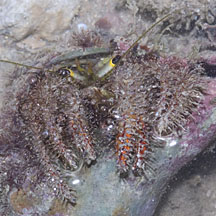
Labrador, Mar 06 |
|
|
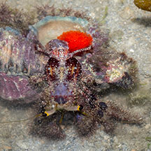
With eggs!
Pulau Semakau (South), Nov 24
Photo shared by Marcus Ng on facebook. |
|
|
*Species are
difficult to positively identify without close examination.
On this website, they are grouped by external features for convenience of
display.
| Very
hairy hermit crabs on Singapore shores |
| Other sightings on Singapore shores |
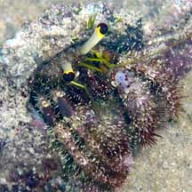
Sentosa, Jul 08
Photo shared by Lok Kok Sheng on his
blog. |
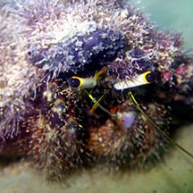
Sentosa Serapong, May 17
Photo shared by Jianlin Liu on facebook. |
|
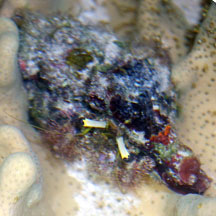
Sentosa Tg Rimau, Jan 26
Photo shared by Rui Quan Oh on facebook. |
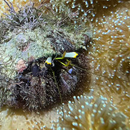
Sentosa Tg Rimau, May 24
Photo shared by Tammy Lim on facebook |
|
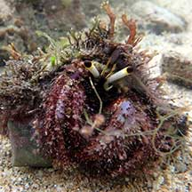
Pulau Tekukor, Nov 20
Photo shared by Loh Kok Sheng on facebook. |
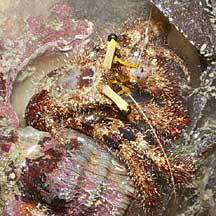
Pulau Tekukor, Jan 10
Photo shared by James Koh on his
flickr. |
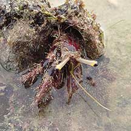
Pulau Tekukor, Jan 22
Photo shared by Vincent Choo on facebook. |
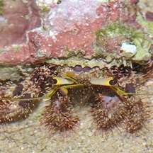
Lazarus Island, Feb 11
Photo
shared by James Koh on his
blog |
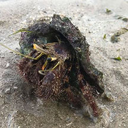
Lazarus Island, Nov 19
Photo
shared by Kelvin Yong on facebook. |
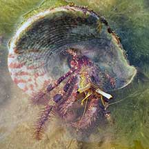
Lazarus Island, Feb 21
Photo
shared by Richard Kuah on facebook. |
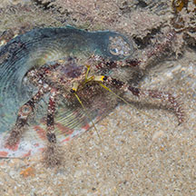
Kusu Island, May 25
Photo shared by Marcus Ng on facebook. |
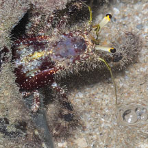
Kusu Island, May 25
Photo shared by Marcus Ng on facebook |
|
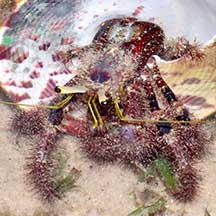
St. John's
Island, Oct 20
Photo shared by Loh Kok Sheng on facebook. |
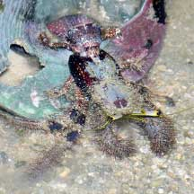
St. John's
Island, Apr 21
Photo shared by Loh Kok Sheng on facebook. |
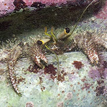
St. John's
Island, Nov 15
Photo shared by Marcus Ng on facebook. |
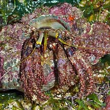
Sisters Island, Sep 10
Photo shared by Loh Koh Seng on his
flickr. |
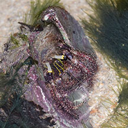
Small Sisters Island, May 18
Photo shared by Dayna Cheah on facebook. |
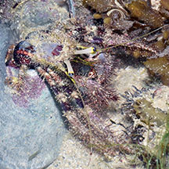
Small Sisters Island, Aug 20
Photo shared by Loh Kok Sheng on facebook. |
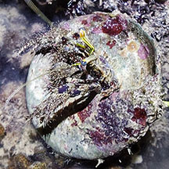
Big Sisters Island, Aug 25
Photo shared by Richard Kuah on facebook. |
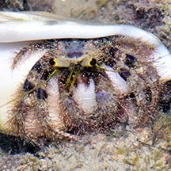
Big Sisters Island, Jan 20
Photo shared by Loh Kok Sheng on facebook. |
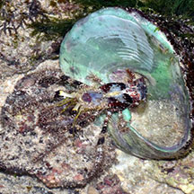
Terumbu Selegie, Jan 17
Photo shared by Loh Kok Sheng on his blog. |
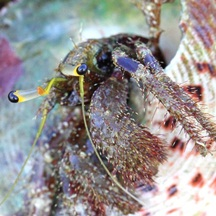
Pulau Jong, Apr 11
Photo shared by Russel Low on facebook. |
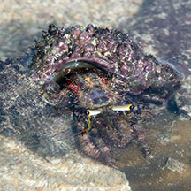
Pulau Jong, Aug 17
Photo shared by Lim Yaohui on facebook. |
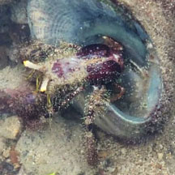
Pulau Jong, Jan 23
Photo shared by Che Cheng Neo on facebook. |
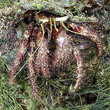
Cyrene, May 25
Photo shared by Richard Kuah on facebook. |
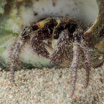
Pulau Hantu, Jul 20
Photo shared by Vincent Choo on facebook. |
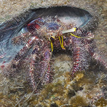
Pulau Hantu, Jun 25
Photo shared by Marcus Ng on facebook. |
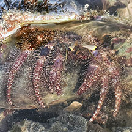
Pulau Semakau (West), Jul 25
Photo shared by Richard Kuah on facebook. |
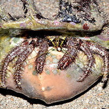
Pulau Semakau (North), Apr 16
Photo shared by Loh Kok Sheng on facebook. |
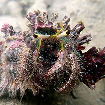
Pulau Semakau (South), Jan 20
Photo shared by Jianlin Liu on facebook. |
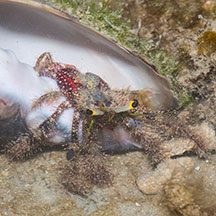
Terumbu Semakau, Jul 20
Photo shared by Marcus Ng on facebook. |
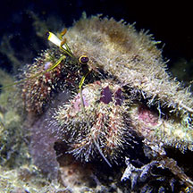
Terumbu Raya, Jun 20
Photo shared by Jianlin Liu on facebook. |
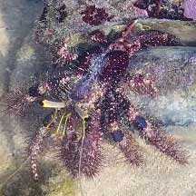
Beting Bemban Besar, May 22
Photo shared by Che Cheng Neo on facebook. |
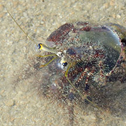
Terumbu Bemban, Aug 23
Photo shared by Tommy Arden on facebook. |
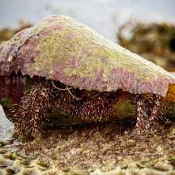
Pulau Biola, Jan 22
Photo shared by Russel Low on facebook. |
|
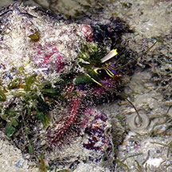
Terumbu Pempang Laut, May 19
Photo shared by Jianlin Liu on facebook. |
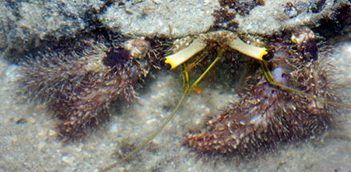
Pulau Senang, Jun 10
Photo shared by Marcus Ng on flickr. |
|
|